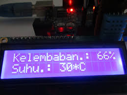
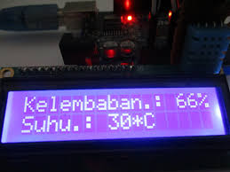

Nama Anggota Kelompok
- Faidul Fajar Marpaung
- Michael William Butarbutar
- Natanael Hutagalung
- Putra Pratama Sagala
- Egia Pratama
Deskripsi
Dalam pengukuran suhu, terdapat berbagai metode dan cara. Salah satunya dengan metode otomatis. Metode otomatis adalah metode yang segalanya serba otomatis, sehingga tidak melibatkan manusia untuk pekerjaan tersebut. Alat pengukur suhu otomatis dapat diletakkan dimana saja dan dapat berfungsi secara terus-menerus selama ada sumber daya (baterai atau listrik).Alat pengukur suhu ruangan otomatis ini dapat digunakan untuk pemantauan suhu dan kelembaban di ruangan
Gambar Pengatur Suhu
 

Pengatur Suhu Ruangan
Kelebihan dan Kekurangan Produk
kelebihan
thermohgrometer yaitu analog dan digital. Thermohygrometer digital seperti gambar diatas menunjukkan suhu dan kelembapan dengan angka yang jelas sedangkan thermohygrometer analog (gambar bawah) berupa jarum untuk menunjukkan suhu dan kelembapan. Kelebihan thermohygrometer digital adalah mudah membaca angka suhu dan kelembapan dibandingkan dengan thermohygrometer analog
Touch Interaction
Powered by bespoke-touch
Responsive Slides
Powered by bespoke-scale
Bullet List
Powered by bespoke-bullets
- Bullet 1
- Bullet 2
- Bullet 3
Syntax Highlighting
Powered by Lea Verou's Prism
(function() {
function hanoi(n, a, b, c) {
return n ? hanoi(n - 1, a, c, b)
.concat([[a, b]])
.concat(hanoi(n - 1, c, b, a)) : [];
}
return hanoi(3, 'left', 'right', 'mid')
.map(function(d) {
return d[0] + ' -> ' + d[1];
});
})();Named Route
Powered by bespoke-hash
Look up! This route has been named with a data-bespoke-hash attribute.
Just the beginning…
- Edit HTML markup in src/index.html
- Edit Stylus styles in src/styles/user.styl
- Edit JavaScript in src/scripts/main.js
- Enjoy! :) -@markdalgleish